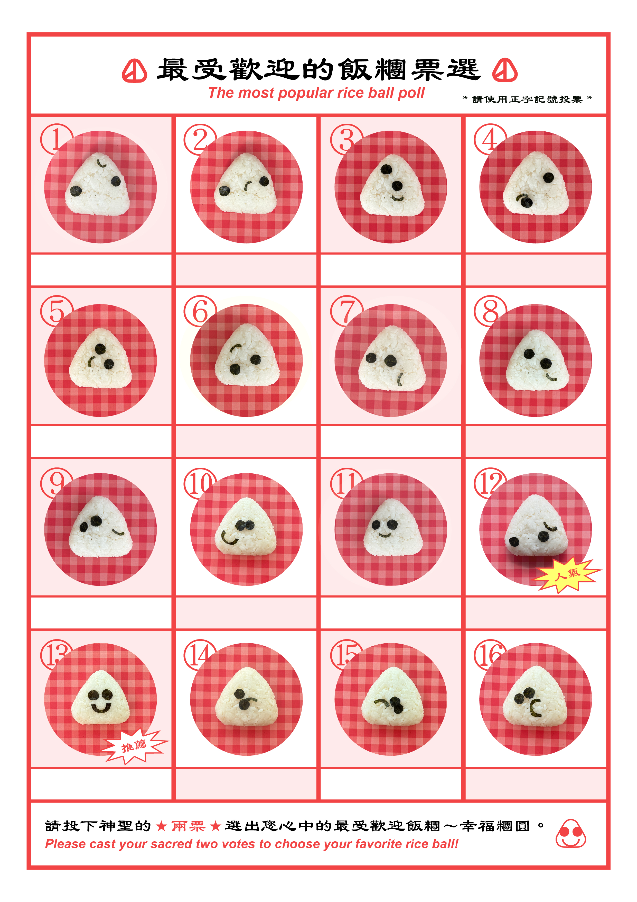
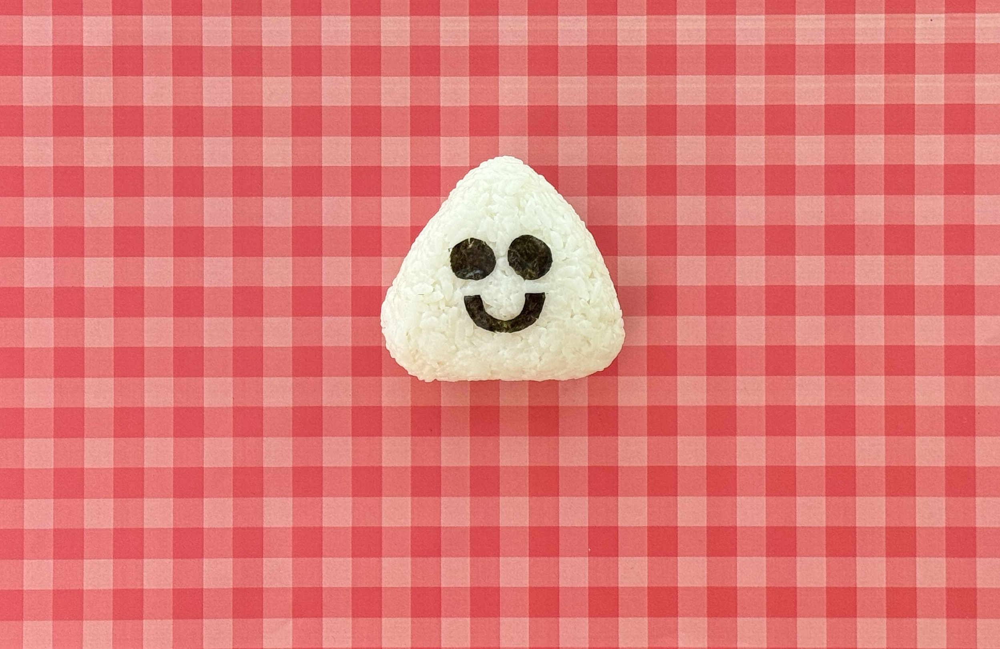

Reels
創作大綱
故事要從自身動機說起，因為喜歡觀察所以總是能在日常中找到有趣的事物，而將事物與表情聯想的現象稱之為pareidolia，顏文字亦是由此誕生!此專案探討利用簡單的元素搭配機器及限定指令後創造出的隨機性、可能性，藉此做選票圖鑑找出最端正且最受歡迎的飯糰。

完美飯糰製造所 ! Welcome to Perfect Rice Ball Factory! 這是2026/07於「教育部藝術與設計菁英海外培訓計畫」發表的第三階段紀錄。

故事要從自身動機說起，因為喜歡觀察所以總是能在日常中找到有趣的事物，而將事物與表情聯想的現象稱之為pareidolia，顏文字亦是由此誕生!此專案探討利用簡單的元素搭配機器及限定指令後創造出的隨機性、可能性，藉此做選票圖鑑找出最端正且最受歡迎的飯糰。